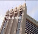
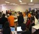
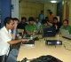
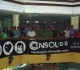

Inicio
Información general, lema.El CONASOL 2011 se llevará a cabo los dias 7 y 8 de Octubre 2011 desde las 9:00am hasta las 18:00pm INGRESO LIBRE
Inscríbete en: http://www.softwarelibre.org.bo/inscripcionconasol2011
La otra revolución boliviana: el software libre se revela en 2011 !!
-
Inicio
Información general, lema.El CONASOL 2011 se llevará a cabo los dias 7 y 8 de Octubre 2011 desde las 9:00am hasta las 18:00pm
Inscríbete en: http://www.softwarelibre.org.bo/inscripcionconasol2011
La otra revolución boliviana: el software libre se revela en 2011 !! -

Lugar
¿Dónde será el evento?7 y 8 de Octubre
Auditorio del Centro de Comunicaciones
Av. Mariscal Santa Cruz Esq. Calle Oruro
Ver mapa -

Programa
Expositores, cronograma, actividades.Fecha
Viernes 7 - Software y Estado
Sábado 8 - Charlas Técnicas -

Llamada a trabajos
Comparte tu experiencia en el Conasol 2011.Cerrada
Para participar como expositor del Conasol 2011 descarga el llamado a trabajos (ODT o PDF), envía tu trabajo
Plantilla para la presentación de trabajos formato ODT y PDF
Se publicará una revista científica como memoria del evento, con los mejores trabajos seleccionados!
Fechas Importantes
Presentación de trabajos: 26-Septiembre-2011. 00:00 horas
Publicación de trabajos aceptados: 03-Octubre-2011. 12:00 horas -

Contacto
Reservas, contactos, proponer charla o tallerEscribir a congreso@softwarelibre.org.bo.
{kind=link}
{kind=link}
{kind=link}
{kind=link}
{kind=link}